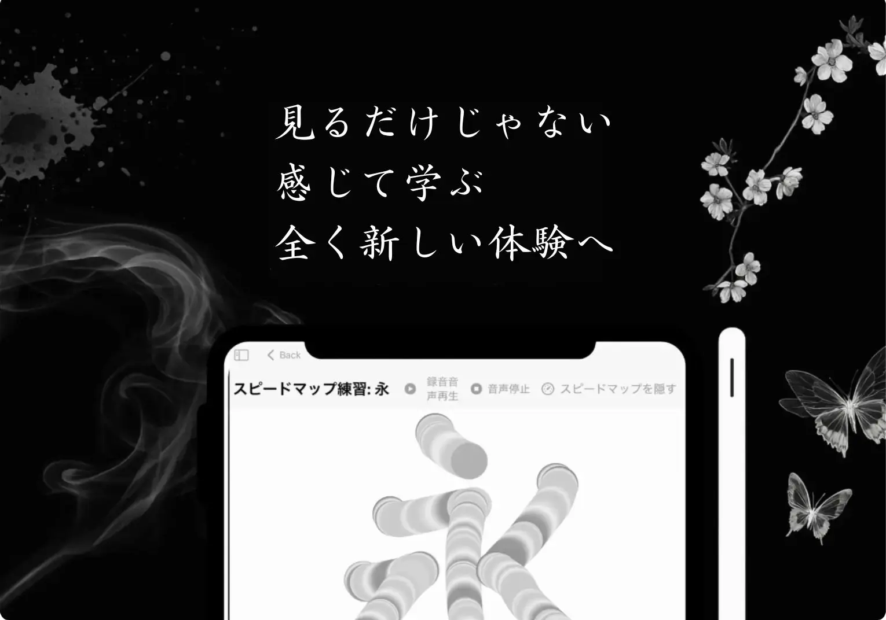
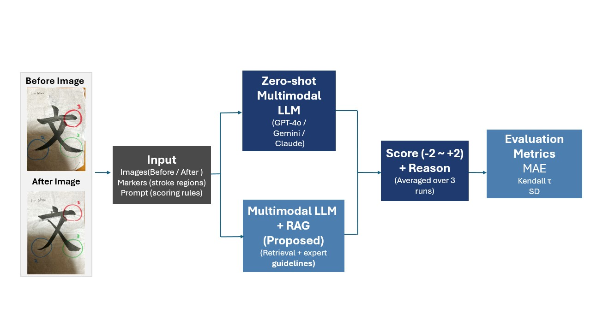

About Me
Hi there! My name is Mio, and I'm a high school student at Institute of Science Tokyo High School. I am supported by the Tatsujin Program (National Institute of Informatics) and conduct research under the mentorship of Hirokatsu Kataoka. My current research focuses on the application of digital technologies to Shodo (Japanese calligraphy) and Computer Vision.
I was previously passionate about robotics — I spent one year with a Japanese FRC team and another with a Swiss FRC team, experiences that deepened my appreciation for the intersection of engineering and creativity.
I love combining art with AI and Computer Vision to create entirely new objects, concepts, and atmospheres.
Outside of research, you can find me practicing Shodo, which I have pursued for 11 years since the age of 7, watching dramas and films, and listening to K-pop.
Projects

Fudey: A Tablet-Based Calligraphy Learning System with Multimodal Feedback
Fudey is an iPad app that makes the invisible properties of brush technique — pressure, speed, and tilt — simultaneously visible, audible, and spatially explorable. In a user study with 45 participants, 77.8% showed measurable improvement in stroke quality after just 3 minutes of use.

Local Brushstroke Quality Assessment via Vision-Language Feedback
We investigate whether Multimodal Large Language Models (MLLMs) can evaluate local brushstroke quality in calligraphy and generate educationally useful natural language feedback. Comparing GPT-4o, Claude Sonnet 4, and Gemini 2.5 Flash against expert calligraphers, we find that while models achieve useful absolute accuracy, none produce statistically significant rank correlations with human judgment.
Interests
○○大学
- 〇〇論のTA（2025年秋）
- △△のTA（2024年春）
□□大学
- アルゴリズム論のTA（2023年）
- 確率論のTA（2022年）
- Python入門の講義アシスタント
〇〇トリオ
大学室内楽 2024春（曲名、曲名、曲名）
ここに音楽活動の説明を書きます。どんな楽器を弾いているか、 どんなジャンルに挑戦したか、印象的なエピソードを書きましょう。
ソロ演奏
楽器のソロ演奏についての説明です。
制作物・デザイン作品のギャラリーです。
画像
画像
画像
画像